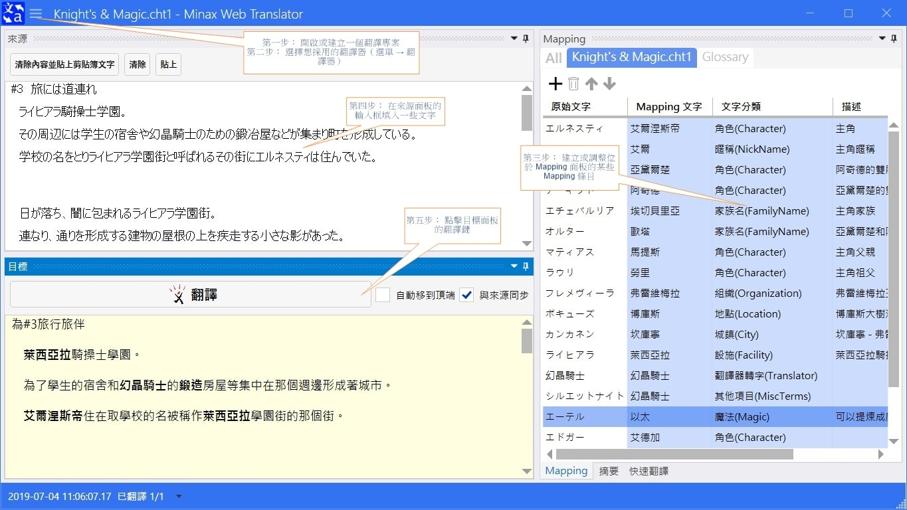

概觀
Minax 是為了讓我個人使用的一系列子專案和 App。
Minax Web Translator
- 為取用遠端網路翻譯器而設計的App，包含 Windows 和 Android 版等
參見 MinaxWebTranslator

Minax.Shared
- 在 Minax 子專案間共用的函式庫
- 包含共通功能、函式與一些定義（Profiles）
Minax Inventory Manager
- 一個類似 Memento Database (Android) 簡單的庫存管理 App
- 待設計...
編譯環境
- 微軟 Visual Studio 2019 16.3.x
- .Net Framework 4.7 SDK
- .Net Core 3.0 final
- Android SDK Platform 28 (Android 9.0 - Pie)
更新紀錄
Minax Web Translator
v0.0.4
- 升級 .Net Core 3.0 正式發行版的相關程式碼。
- 升級 MahApps.Metro nuget 版本為 v2.0.0-alpha0490 並更新相關程式碼。
- 加入 MinaxWebTranslator.Desktop 中 Mapping 面板的文句搜索框。
- 變更 MinaxWebTranslator.Desktop 中某些繁體中文（zh-Hant）的翻譯文句。
- 移除 MinaxWebTranslator.Desktop 中 app.config 的 "system.diagnostics" 區段以符合 .Net Core 3 限制。
- 變更 MinaxWebTranslator.Desktop 中 DataGridCell 的單擊編輯程式碼與邏輯。
- 修正 MinaxWebTranslator.Desktop 中 MappingDockingPanel.xaml.cs 的加入項目範圍錯誤。
- 修正 MinaxWebTranslator.Desktop 中無法使用 Bing Translator 選擇器的程式碼以反映官方變更過的 Bing Translator 網頁程式碼。
- 修正 MinaxWebTranslator.Desktop 中關於「當檔案變更時自動整合 Monitor 內容」應用程式設定選項的缺失並變更其敘述為「當檔案加入、刪除或是變動時，自動整併 Glossary Mapping 條目而不一一詢問」。
- 修正 MinaxWebTranslator.Desktop 中 SourceDockingPanel.cs 來源面板中未正確擷取來源文字的錯誤。
v0.0.3
- 於 MinaxWebTranslator 的讀我檔中加入「Mapping 概念」段落。
- 於 MinaxWebTranslator.Desktop 的 MiCopyAndQuickXlateSelection MenuItem 的來源面板修改說明文字並修正未正確加入的複製文字動作。
- 於 MinaxWebTranslator.Desktop 的 MainWindow.cs 修改 RtbSrcTgt_ScrollChanged() 演算法。
v0.0.2
- 加入 zh-Hant (繁體中文) 語系和文件
- 修正手動輸入來源輸入框文字後，目標翻譯鍵未正確啟用問題
- 修正其他錯誤和一些錯字
v0.0.1
初始發行
Minax.Shared
v0.0.4
- 變更百度 API 的文句替換模式、重試邏輯、替換字句與 BaiduTranslatorFormat2 格式。
v0.0.3
- 於 Profiles.cs 中加入一些百度翻譯用的取代字。
- 修改 RemoteAgents.cs 中 Excite 翻譯器的位址。
v0.0.2
- 加入 zh-Hant (繁體中文) 語系和文件
- 修正 Profiles 中 DefaultEngineFolders 的 Microsoft 目錄名稱
- 修正其他錯誤和一些錯字
v0.0.1
初始發行